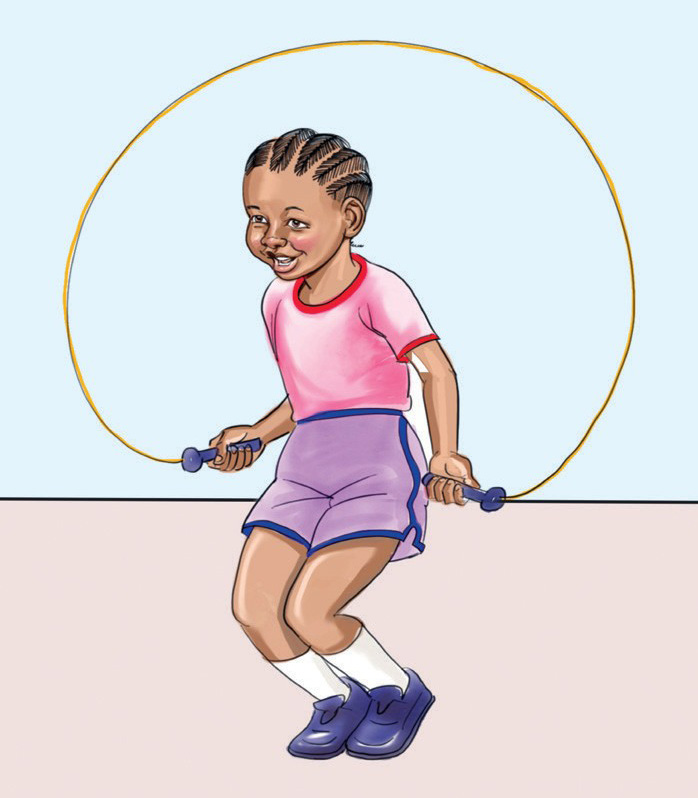

There are two types of skipping games:
1. Skipping on your own (solo skipping).
2. Skipping in a group (group skipping).
Skipping on your own (solo skipping)
This game is played by one person.
The player swings the rope and jumps over it alone.
You can jump with both feet or one foot.

Skipping with two legs
1. Hold one end of the rope with one hand.
2. Hold the other end of the rope with the other hand.